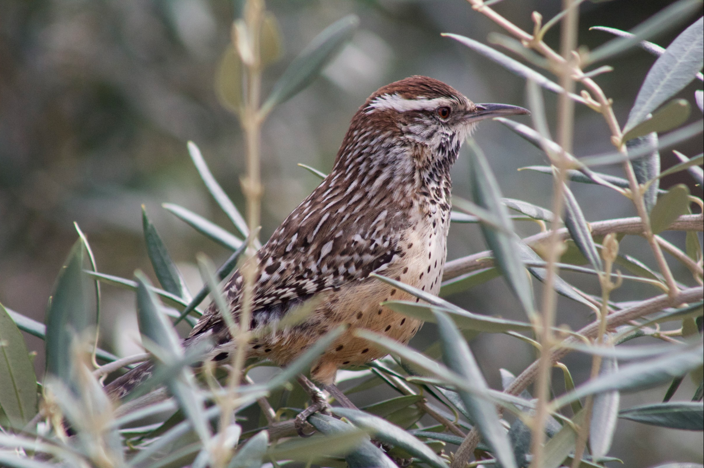
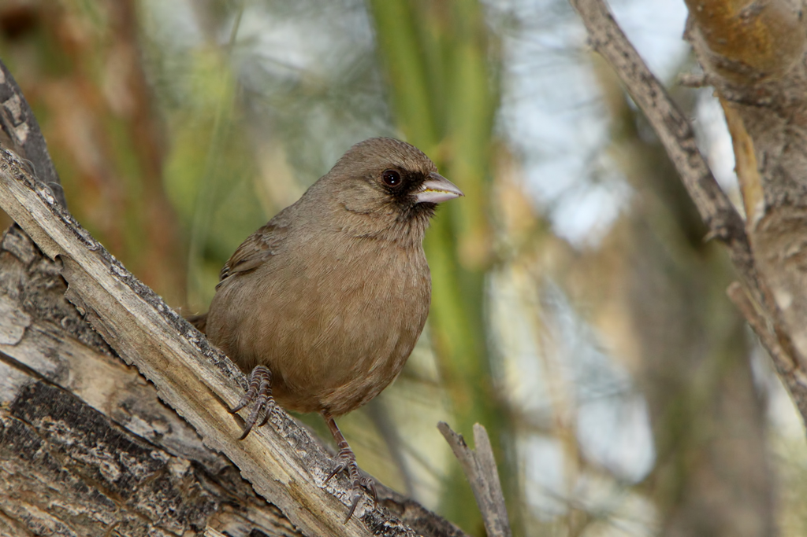
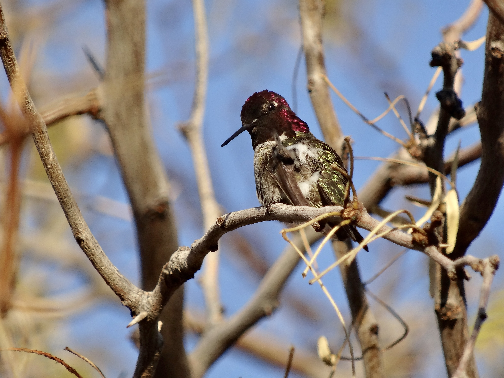
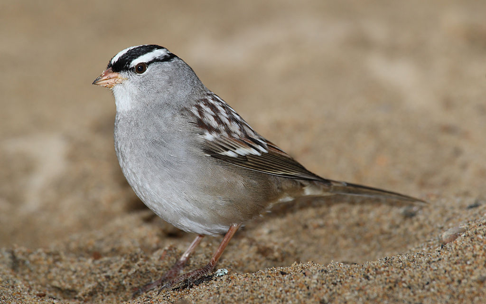
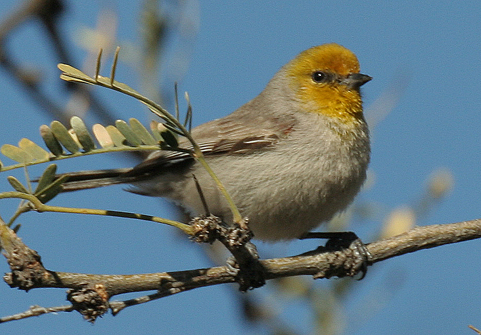
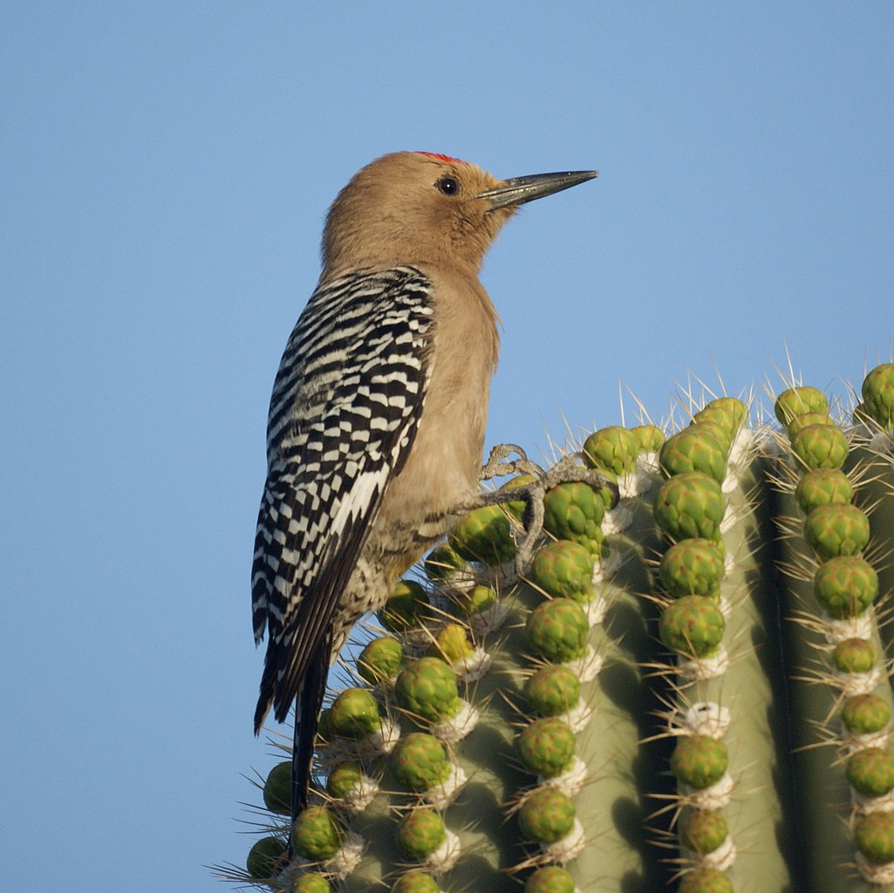
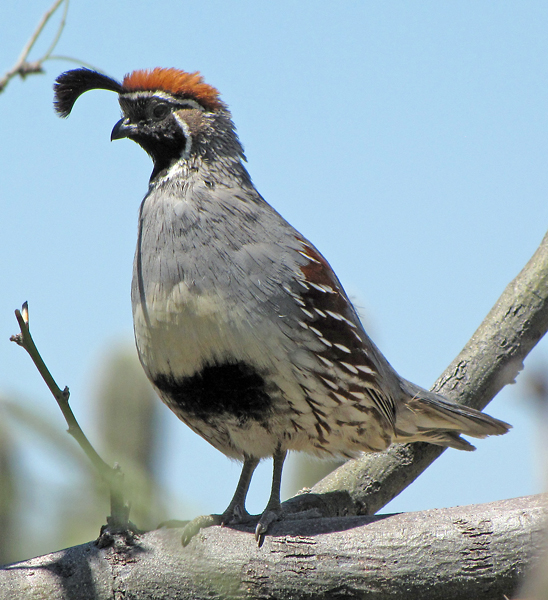
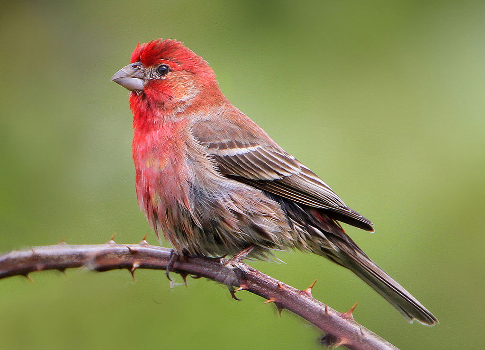
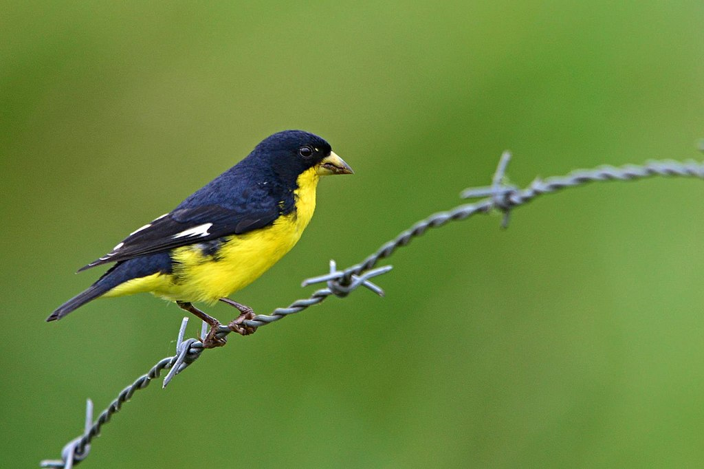
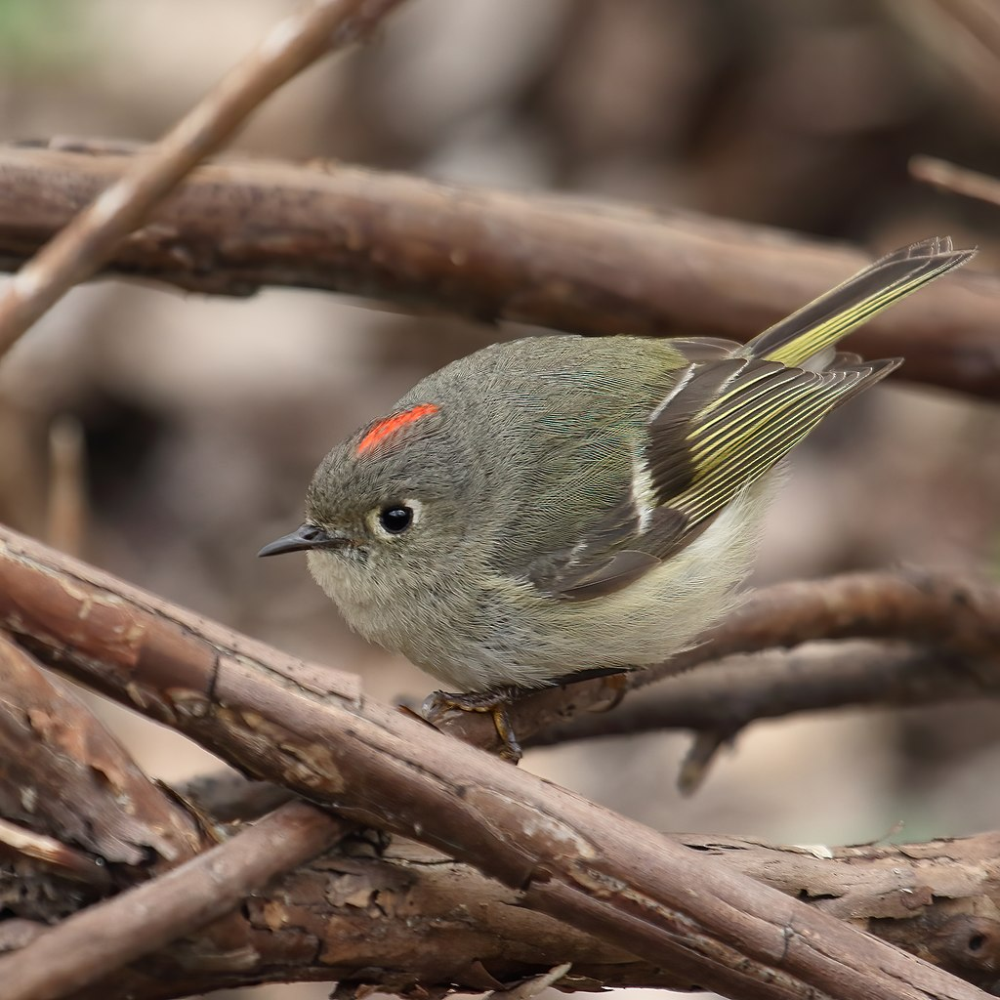

Birdwatching in Arizona: 12 common birds to look for!
1. Cactus Wren - Campylorhynchus brunneicapillus

Cactus Wren | Image by Tahiry Langrand via
Merlin ebird
The cactus wren is a species of wren that are endemic to the deserts of the southwestern United States, northern and central Mexico.
It is the state bird of Arizona, and also the largest wren in the United States.
It has a brown plumage, with black and white spots as markings.
Like most wrens, they have a long bill with a slightly downward curve. They have a distinctive white “eyebrow”.
This bird measures in at 7.1 - 8.3 inches in length with a wingspan of 10.5 to 11.0 inches.
They are always on the move and can often be seen fanning their tail and being noisy.
You can find them around cholla or prickly-pear cacti where they make their nests.
They also prefer sitting on top of cacti.
The cactus wren can be found all year throughout the southern half of Arizona.
Its diet consist of fruit pulp, seeds, ants, grasshoppers, beetles, and other arthropods.
2. Abert's Towhee - Pipilo aberti

Abert's Towhee | Image by Alan Vernon, CC BY 2.0,
via Wikimedia Commons
The Abert's Towhee has grayish-brown or sandy brown back and wings with a long, gray tail. This coloration
helps them blend well with their Sonoran desert surroundings.
Males and females appear the same. They have a pale bill, with a warm reddish-brown color underneath the tail.
They measure in at 8.3 - 9.1 inches in length with a wingspan of 10.4 to 11.6 inches.
They like to spend their time in brushy habitats, especially near cottonwoods and willows.
Abert's Towhee stays in Arizona all year, and is mainly found in the southern and western parts of the state.
This Towhee, like others, eats mostly insects that it finds in leaf litter or loose soil.
When it’s not eating insects the Abert’s Towhee forages for seeds.
3. Anna's Hummingbird - Calypte anna

Anna's Hummingbird | Image by Sthitadhi Maiti,
via Instagram link
Anna’s Hummingbirds are among the most common hummingbirds along the Pacific Coast,
yet they're anything but common in appearance. Anna’s Hummingbirds are mostly green and gray,
without any rufous or orange marks on the body. The male's head and throat are covered in
iridescent reddish-pink feathers that can look dull brown or gray in absence of direct sunlight.
The females/juveniles are metallic green above with some reddish-pink feathers on the throat.
They are tiny among birds, medium-sized humingbirds, with long, straight, and slender bill with broad tail.
Anna's hummingbirds are 3.9 to 4.3 in (9.9 to 10.9 cm) long with a wingspan of 4.7 inches (12 cm) and
a weight range of 0.1 to 0.2 oz (2.8 to 5.7 g). These birds mostly feed on nectar and insects. They take nectar
from flowers, and will feed on tiny insects as well. Will also feed on sugar-water mixtures in hummingbird feeders.
They normally have a body temperature of 107 degrees F, which is extremely high for a human body.
When outside temperatures fall, Anna's and many other species of hummingbirds enter torpor.
Their breathing and heart rate slow, and their body temperature can fall as low as 48 degrees Fahrenheit.
When the temperature warms, the hummingbirds can become active again in a few minutes.
4. White-Crowned Sparrow - Zonotrichia leucophrys

White-Crowned Sparrow | Image by Mdf, CC BY-SA 3.0,
via Wikimedia Commons
White-crowned sparrows are medium-sized member of the New World sparrow family, this species is marked by a
gray face and black and white streaking on the upper head. They have a short, conical yellow bill.
In most parts of the West, the smartly patterned White-crown is very common at one season
or another: summering in the mountains and the north, wintering in the southwestern
lowlands, present all year along the coast. These birds measure in at 5.9 – 6.3 inches in length
with wingspans of 8.3 to 9.4 inches. Their diet includes any kind of seeds, especially black oil sunflower seeds.
5. Verdin - Auriparus flaviceps

Verdin | Image by Wayne Dumbleton, CC BY 2.0,
via Wikimedia Commons
Verdins have a color pattern which is easily identifiable. These small birds have a light gray body,
yellow head, and reddish-brown patch at the top of their wing. These tiny birds measure in at
3.1 - 4.3 inches in length with wingspans of approximately 6.5 inches. In order to cope with living in hot,
dry places, they are often more active in the morning and become quiet in the heat of midday.
They are agile when hunting for their main meal of insects and spiders. They also drink nectar
from flowers by either sticking their head into the flower or piercing the base of the flower.
Verdins are year-round residents in the southern and western parts of Arizona, but are rare or
absent in the north and east.
6. Gila Woodpecker - Melanerpes uropygialis

Gila Woodpecker | Image by Mike & Chris, CC BY-SA 2.0,
via Wikimedia Commons
The Gila Woodpecker is a pretty bird and quite easy to identify. They have black wings with white stripings
made up of dots which are present on the back, wings, and tail. Their upper breast and underbelly are a
smooth grayish-brown which extends to their faces. The males have a red patch on their forehead while females do not.
These birds have long, straight black bills. These birds measure in a 8.7 – 9.4 inches in length and have wingspans
of 15.8 to 16.5 inches.
These woodepeckers have an omnivorous diet, which includes wide variety of insects, also cactus fruit, other wild
and cultivated fruit, berries of shrubs and mistletoe, nectar from flowers, seeds, small lizards, earthworms, eggs
and sometimes youngs of smaller birds.
They are experts of living in treeless deserts, as long as there are Saguaro cacti. The gila digs out its nest
at the top of the cactus, then waits for the pulp to dry out before moving in.
Gila woodpeckers live year-round in deserts in the southern half of Arizona.
7. Gambel's Quail - Callipepla gambelii

Gambel's Quail | Image by SearchNet Media from Tucson, Arizona, USA,
CC BY 2.0,
via Wikimedia Commons
Gambel’s Quails are pretty birds, with wings that are a smooth gray at the shoulder and descend into a mixture of
rich brown with white streaks, with gray backs and tails. Both sexes have a gray body with chestnut-brown wings
striped with white, tan on their belly and a black comma-shaped crest that falls forward off their head.
Males also sport a brown cap, black face and black belly patch. Females have more gray content in their coloration
and lack the elaborate head-marking of the males. They measure in at approximately 9.8 inches in length and
have wingspans of 13.4 to 14.2 inches.
These birds like to eat mostly seeds, leaves, berries.
Gambel’s quail prefer to gather in shrubby or thorny areas where they like to forage in large groups in mornings
or late afternoons. They are capable of flying, but prefer to run along the ground. Cactus stands, Mesquite thickets,
or dry, grassy areas are common places where you might see a Gambel’s Quail. They stick around in Arizona all year
within their preferred habitats, which are mainly found in the western and southern portions of the state.
8. Great Blue Heron - Ardea herodias

Great Blue Heron | Image by Sthitadhi Maiti
The great blue herons are very tall and large wading birds, with a long neck and a distinct wide black stripes over their eyes.
They are grayish-blue in color, with long feather plumes on their head, neck, and back.
These birds measure in a 39 – 52 inches in length and have wingspans of 5.5 to 6.6 feet.
They have a highly variable and adaptable diet. Eat mostly fish, but also frogs, salamanders, turtles, snakes, insects,
rodents, birds. Great Blue Herons can hunt day and night thanks to a high percentage of rod-type photoreceptors in their eyes
that improve their night vision.
Great blue herons are highly adaptable, thriving around all kinds of waters from subtropical mangrove swamps to desert rivers
to the coastline of southern Alaska. They are typically seen in Arizona along the edges of rivers, lakes, and wetlands.
9. House Finch - Haemorhous mexicanus

House Finch | Image by Nigel from Vancouver, Canada, CC BY 2.0,
via Wikimedia Commons
The House Finch is a common backyard bird across both the eastern and western parts of the country.
They usually show up in groups at theb bird feeders in backyards.
Males are mostly streaked brown in color with some red on the head and chest, females are all brown.
These finches measure in at 5.1 – 5.5 inches in length and have wingspans of approximately 7.9 to 9.8 inches.
House finches eat mostly seeds, buds, berries. Almost all of diet is vegetable matter.
Their habitats include cities, suburbs, farms, canyons. Original habitat was probably streamside trees
and brush in dry country, woodland edges, chaparral, other semi-open areas. House Finches are year round
residents throughout Arizona.
10. Lesser Goldfinch - Spinus psaltria

Lesser Goldfinch | Image by Alejandro Bayer Tamayo,
CC BY-SA 2.0,
via Wikimedia Commons
The male Lesser Goldfinch has a black cap, yellow underbody, and white patches on its dark wings.
There is also another plumage variation that may be present in Arizona where they can appear a
dark glossy black (as pictured above) all along their entire head and back. Females are yellow
below with a more olive colored head and back. These finches are often found in a mixed flock
with other goldfinches, house finches and sparrows.
This bird measures in at 3.5 – 4.3 inches in length with a wingspan of 5.9 to 7.9 inches.
Lesser goldfinches like mostly seeds, some insects. Majority of diet at all seasons consists of seeds.
The Lesser Goldfinch can be found year round throughout most parts of Arizona. In the northeastern corner,
they may only be present during the spring and summer. They prefer to live in open brushy country,
open woods, wooded streams, gardens.
11. Ruby-crowned Kinglet - Corthylio calendula

Ruby-crowned Kinglet | Image by Cephas,
CC BY-SA 4.0,
via Wikimedia Commons
This tiny kinglet is an olive green with white wing bars, yellow edged wing and tail feathers and a white eye-ring.
The male has a small patch of bright red feathers on top of his head that he can flash when excited,
however these are usually hidden.
This little bird measures 3.5 – 4.3 inches from tip to tail and has an average wingspan of only 6.3 to 7.1 inches.
Their diet at all season consist of mainly inscets. The birds focus on whatever is most readily available;
includes many small beetles, flies, leafhoppers, bugs, caterpillars, and many others.
The kinglet, found throughout North America, is migratory, and its range extends from northwest Canada and Alaska
south to Mexico. They are found in conifers in summer; other trees and brush in winter.
They breed in coniferous forests, including those of spruce, fir, Douglas-fir, and some pine woods.
For much of Arizona, the ruby-crowned kinglet is a winter visitor. However some may stick around all year
in the relatively cooler northern and eastern parts of the state.
12. Yellow-rumped Warbler - Setophaga coronata

Yellow-rumped Warbler (Audubon's) | Image by Tom Koerner/USFWS,
CC BY 2.0,
via Wikimedia Commons
The color pattern on the Yellow-rumped warbler can vary depending on it’s location. It is the main winter warbler in North America.
Included in this species are two different-looking forms, the eastern 'Myrtle' Warbler and western 'Audubon's' Warbler. In Arizona,
you are most likely to see the “Audubon’s” variety, which has bright yellow on the throat, rump, and sides.
You may even see a dash of yellow on top of their head. Although the females share the same color pattern,
but the colors may appear duller overall and with markings less distinct than males. Like most warblers,
their colors will be the most crisp and bright in the spring, and fade considerably during the winter.
These little guys measure in at 4.7 – 5.5 inches in length with a wingspan of 7.5 to 9.1 inches.
Their diet includes insects and berries. They feed on caterpillars, wasps, grasshoppers, gnats, aphids,
beetles, and many other insects; also spiders. Feeds in winter on berries of bayberry, juniper, wax myrtle,
poison ivy, and others. Yellow-rumped warblers are often found in Arizona during the winter, however there are pockets in the
central and southwestern parts of the state where they can be found during the spring and summer breeding season.